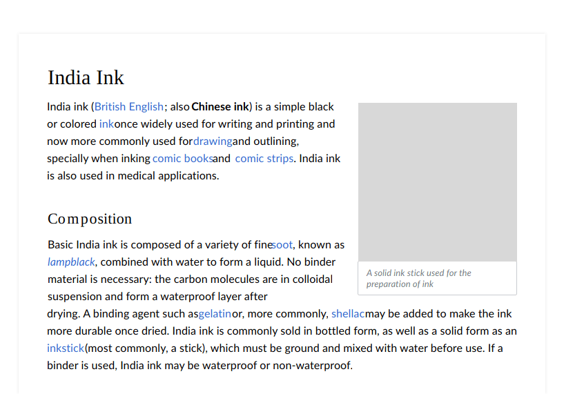

Visual Style
Typography
Wikimedia projects rely on writing and reading, and typography is a key component of their design. You need to consider the typeface, size, style, and spacing of your text to achieve good readability. Our typographic choices make our content accessible, present it in a neutral way and convey its reliability.

Readability
We want content to be readable for everyone, in all circumstances: being color-blind or the sun hitting your screen should not be a barrier to access our content.
Grid
Laying out text is key to better readability. Typographers and typesetters have been using grids to lay out text for centuries. Grids help scan your content in a better way. We lay our content on a horizontal and a vertical grid.

The whitespace between sections, complimentary block elements like images, and headings should be consistent and proportional to rest of the whitespace.
Contrast
When using text, make sure that it provides enough contrast to be read comfortably. Check the contrast between the colors used for text and its background. Make sure to provide at least level AA sufficient contrast (4.5:1). The color palette provides the contrast levels for pure white and black surfaces, but you need to ensure the contrast on other combinations.

Tracking and leading
Text spacing. How text is placed in space affects its readability. Follow these considerations for text paragraphs:
- Line length should be no longer than 75 characters.
- Line height should be 1.6 times the size of the font used.
Dynamic text
Content will be available in multiple languages, so text length will vary for a given piece of information across languages. Avoid designing interfaces that depend on certain expectation of text length.

Here are few ways to tackle dynamic text:
- Don’t crowd the UI. Keeping the UI simple always helps. Consider reducing the number of elements to make sure the remaining ones have enough room.
- Dynamic layout. Make containers expandable so that they can fit the content.
- Dynamic text. Adjust the size depending on the content. Use a smaller font-size for long content.
- Clipping. Clipping the text with ellipsis. Only if there is no risk of missing important information or the complete information is reachable through a clear alternative means.
Typefaces
Charter and Lato are the recommended typefaces, when available.
- Charter is a serif typeface designed by Matthew Carter in 1987. Charter has a simplified and clean structure that works well even in low resolution displays.
- Lato is a sans-serif typeface designed by Łukasz Dziedzic in 2010. Lato provides very good readability even at small sizes.
These fonts are provided as a reference, but you may use similar criteria when those fonts are not available in your context.
Font selection criteria
Font selection depends on availability. Fonts are not always available for all scripts or all devices. The criteria for font selection has been the following:
- Readability. Fonts with a bigger x-height and open shapes are preferred.
- Neutral aspect. The font should work with many different kinds of content without adding a particular voice to it.
- Simple shapes. Avoiding complex shapes helps text to work better on small sizes, low-resolution devices and reduces printing costs.
- Open. Open source fonts are preferred to align with the open knowledge they deliver.
To extend the font family to new scripts or devices, the above criteria should be followed. Common cases in which you need to look for alternatives are:
Lack of a font delivery mechanism. In cases where custom fonts cannot be delivered to the user (e.g., through web fonts technology), you need to define alternatives. Default fonts such as Lato and Charter can still be recommended as primary options for users that installed those fonts themselves. However, a wider set of fallback options from those available in the user device is needed. Possible fallback options:
- Georgia (present in many devices) can be a fallback for Charter.
- Device default sans-serif font would be used in the absence of Lato.
Language support. There is no font that supports all languages. Individual language communities can identify fonts that better support their languages taking into account the above criteria. Possible fallback options:
- Charis with a wider script support is a good alternative to Charter.
- The Noto family provides a great coverage of languages, making it a good alternative to Lato.
Use of styles
The recommended styles are intended to optimise readability with the density of Wikipedia’s encyclopedic content.
Using the body text size of 16 scale-independent pixels (sp) as a base, a typographic scale of 1.125 was used to derive a harmonious rhythm between font-sizes for various headings and body copy.

The scale-independent pixels can result in a different number of actual pixels in the user screen due to screen density or user preferences. A 16sp text is rendered as 16px in a 1x device at standard zoom level, but it becomes 21px in a 2x device (or when zoomed 200% on a 1x device).
Common text styles are based on the defined scale in order to communicate clearly the content hierarchy.